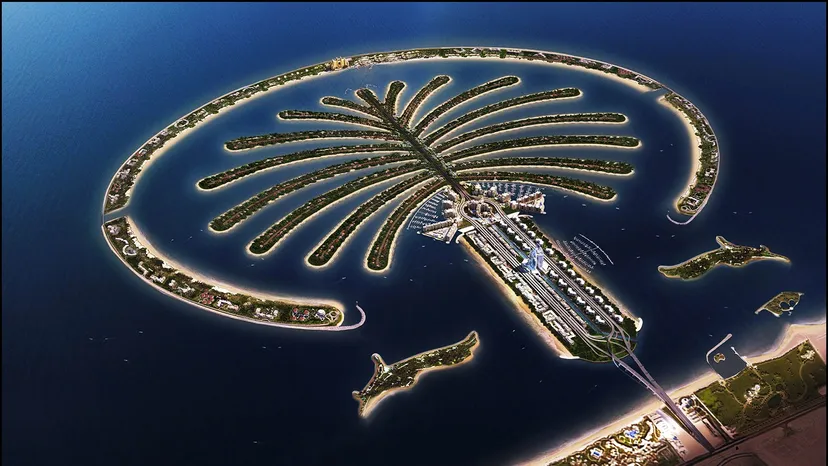

Let's go to Dubai
Places to go in Dubai
- Burj Khalifa
- Palm Island
- Dubai Aquarium & Underwater Zoo
1. Burj Khalifa
Burj Khalifa has been the tallest skyscraper since 2010 with a height of 829.8 m (just over half a mile). The Burj Khalifa also hold six other world records. The Burj Khalifa is also the tallest freestanding structure in the world, has the highest number of stories in the world, has the highest occupied floor in the world, has the highest outdoor observation deck in the world, has the elevator with longest travel distance in the world, and has the tallest service elevator in the world.

2. Palm Island
The Palm Islands consist of three artificial islands, Palm Jumeirah, Deira Island, and Palm Jebel Ali, on the coast of Dubai, United Arab Emirates. And this Palm Island and Palm Jumeirah can be seen from space.
3. Dubai Aquarium & Underwater Zoo
The Dubai Aquarium & Underwater Zoo located in The Dubai Mall is home to thousands of aquatic creatures with more than 33,000 aquatic animals, comprising of over 140 species. The aquarium has more than 400 Shark and Rays in the 10 million litre tank.